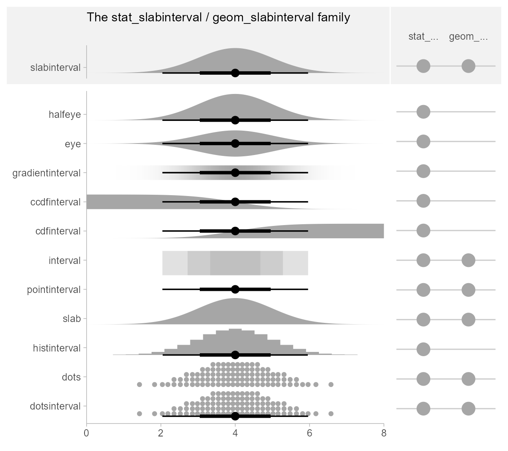
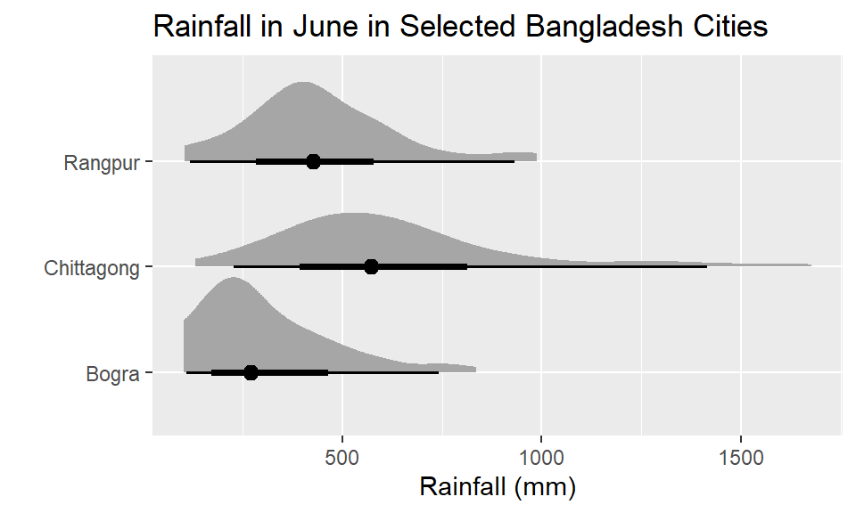
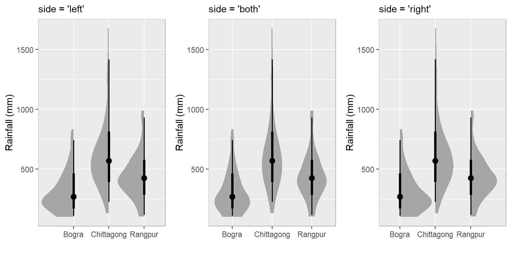
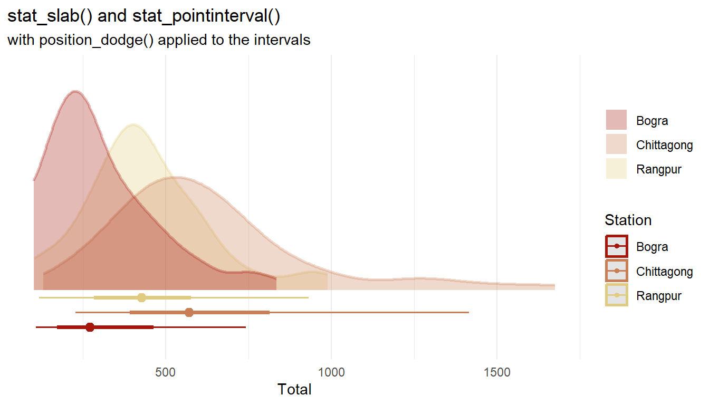
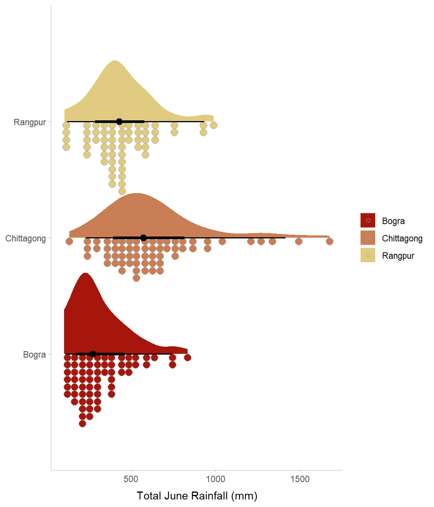

A raincloud plot combines a density plot (the “cloud”), a boxplot (or similar summary statistic plot), and a strip plot or raw data points (the “rain”). This chapter will show how to make some basic examples of these using the ggdist R package.
The ggdist package has many geoms that can be used to show distributions of data. Which one is best to use depends on the data you are wanting to describe and how you want to show the data spread and summary information. The image below summarizes these:

More information on how to use each of these can be found at the tutorial here.
6.1 Basic Raincloud plots
First we will look at how to make the clouds. These are effectively density plots.
The dataset we will use contains the monthly rainfall levels (in mm) for various Bangladesh cities from 1948-2014. We will filter this dataset to keep data from three cities (Bogra, Chittagong, Rangpur) for the month of June.
# A tibble: 6 x 4
Station Year Month Total
<chr> <dbl> <dbl> <dbl>
1 Bogra 1948 6 NA
2 Bogra 1949 6 NA
3 Chittagong 1949 6 624
4 Bogra 1950 6 180
5 Chittagong 1950 6 1676
6 Bogra 1951 6 351
This plot uses stat_halfeye() to draw the density plots. Associated with each density plot is a point interval summary. The default is the median and interquartile range.
library(ggdist)df %>%ggplot(aes(y = Station, x = Total)) +stat_halfeye() +xlab("Rainfall (mm)")+ylab("")+ggtitle("Rainfall in June in Selected Bangladesh Cities")

Next, we will use stat_slabinterval() to show the density plots and summary information. We can dictated which side of the summary information the density plots are shown using the (side=) parameter. This is the basic plot:
p = df %>%ggplot(aes(x = Station, y = Total)) +theme(panel.background =element_rect(color ="grey70")) +xlab("")+ylab("Rainfall (mm)")
Then we can dictate the side. I’m using the grid.arrange() function from the gridExtra package to just show these plots side-by-side.
p1 <- p +stat_slabinterval(side ="left") +labs(subtitle ="side = 'left'")p2 <- p +stat_slabinterval(side ="both") +labs(subtitle ="side = 'both'")p3 <- p +stat_slabinterval(side ="right") +labs(subtitle ="side = 'right'")library(gridExtra)grid.arrange(p1,p2,p3,nrow=1)

Sometimes when constructing these composite plots we may wish to show the summary information and density plots separate from each other. Or, to be more precise, we may wish to show the summary information for each group next to each other and overlay the density plots. We can do that using stat_slab() and stat_pointinterval(). Using stat_pointinterval() instead of a combined stat_slabinterval() allows us to use position_dodge() on the intervals but not the slabs:
df %>%ggplot(aes(fill = Station, color = Station, x = Total)) +stat_slab(alpha = .3) +stat_pointinterval(position =position_dodge(width = .4, preserve ="single")) +labs(title ="stat_slab() and stat_pointinterval()",subtitle ="with position_dodge() applied to the intervals",y =NULL,fill =NULL ) +scale_y_continuous(breaks =NULL) +theme_minimal() +scale_color_manual(values=c("#a6160c", "#c97e55", "#e0cb80"))+scale_fill_manual(values=c("#a6160c", "#c97e55", "#e0cb80"))

6.2 Basic Raincloud Plots
The key to making a raincloud plot is to separate the plotting of the points and the density plots.
This is achieved by using multiple slab geometries together. First, decide which side of the interval to draw the dots. In this example we draw them at the bottom with stat_dotsinterval(side='bottom'). The scale parameter should be adjusted to help avoid overlap of dots and density plots between each group.
The density plot part of the figure (the raincloud) is plotted here using stat_slab(). Its thickness is scaled by n (the number of observations in each group). Doing this and setting the scale properly makes the area of each density plot similar in total to its corresponding dotplot.
The labs(fill=NULL, y=NULL) just removes the title from the legend which is often unnecessary as well as the y-axis title. We also use theme_ggdist() which is a custom ggplot theme similar to theme_classic().
ggplot(df, aes(y = Station, x = Total, fill = Station)) +stat_slab(aes(thickness =after_stat(pdf*n)), scale =0.7) +stat_dotsinterval(side ="bottom", scale =0.7, slab_linewidth =NA) +theme_ggdist() +labs(fill=NULL, y=NULL)+xlab("Total June Rainfall (mm)")+scale_color_manual(values=c("#a6160c", "#c97e55", "#e0cb80"))+scale_fill_manual(values=c("#a6160c", "#c97e55", "#e0cb80"))

6.3 More Advanced Raincloud Plots
There are some elegant examples of raincloud plots being used to show distribution of data points between groups. The following example was adapted from this blog post. It looks at the variation in weight gain from birth to weaning for four genotypes of lambs from sheep breeds in Kenya. The original data come from the ilri.sheep dataset from the agridat R package.
We also use a color palette called SpiritedMedium from the ghibli R package using the scale_fill_ghibli_d() function. This is a blue/brown color palette. The dots are being added to the plot using the stat_dots() function from the ggdist() package. Note that we include outlier.shape=NA inside geom_boxplot() to prevent the outlier dots from being shown twice. binwidth = 1.7 is used to ensure that the dots do not overflow into the distributions of neighboring groups. The half boxplots are being added using the stat_halfeye() function from the same package.
library(ghibli)ggplot(df, aes(x = gen, y = weight_gain_gram, fill=gen)) +geom_boxplot(width =0.1, outlier.shape=NA) +xlab('Lamb genotype') +ylab('Weight gain, in g/d') +scale_color_ghibli_d("SpiritedMedium") +scale_fill_ghibli_d("SpiritedMedium", direction =-1) +ggtitle("Weight gain from birth to weaning in 4 lamb genotypes") +theme_classic(base_size=16, base_family="serif")+theme(text =element_text(size=16),axis.text.x =element_text(angle=0, hjust=.5, vjust =0.5, color ="black"),axis.text.y =element_text(color ="black"),plot.title =element_text(hjust =0.5),plot.subtitle =element_text(hjust =0.5),legend.position="none")+scale_y_continuous(breaks =seq(0, 180, by=20), limits=c(0,180), expand =c(0, 0)) +stat_dots(side ="left", justification =1.12, binwidth =1.7, dotsize=1.35, color=NA) +stat_halfeye(adjust = .5, width = .6, justification =-.2, .width =0, point_colour =NA)